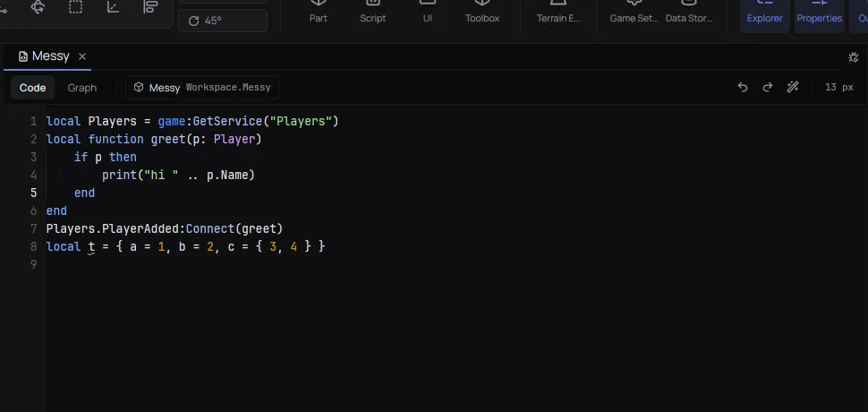

Format with StyLua
Shift+Alt+F formats the open script, no install needed.
Shift+Alt+F (or the wand in the script toolbar) runs StyLua on the open script as one undo step. It uses StyLua's defaults with Luau syntax, so it matches what a Rojo project's StyLua gives you.

The Command Bar gets Luau highlighting and formatting too.
Limits
- Code that doesn't parse is left alone, and the status bar says which line is wrong.
- No per-project
stylua.tomlsettings yet, it's StyLua's defaults.